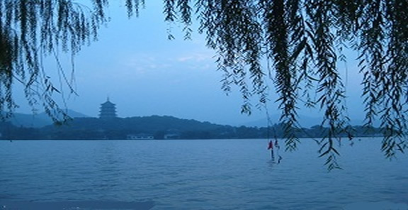
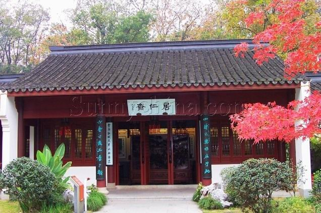

推荐杭州最热门十二条登山线路

杭州号称“三面云山一面湖”，杭州有多少座山，无人能应；山上有多少条路，无人能答。不过有一点可以肯定：山山有路，路路相通。在杭州，登山不仅仅是一项强身健体的运动，因其遍地的名胜古迹和秀美山色，也成为最受杭州市民热捧的出游方式。下面小编为大家推荐十二条杭州最热门的登山线路，周末天气晴朗，结三五好友，融合自然美景，放松一周的紧张情绪，何等快哉！
杭州热门登山路线一：长桥—南屏山—荔枝峰—慧日峰—九曜山—四眼井
登山时间：半天
难度系数：☆☆☆
精彩系数：☆☆☆☆
交通指南：乘4路长桥附近下
登山指南：此路线除开始时有段路有一定难度外，其余都较为平坦，且还能登上环西湖的最高峰——九曜山，它的海拔高度为198米。而在慧日峰与九曜山这一段，有心的你还要注意一下两边的岩石，那是种冰川岩，在杭州的群山中较为少见。下山路口在虎跑路，交通方便。

杭州热门登山路线二：万松书院—老虎洞—凤凰亭—月岩—栖云寺—梵天寺—下山
登山时间：一天
难度系数：☆☆☆☆
精彩系数：☆☆☆☆☆
交通指南：30路公交车
可达登山指南：此登山线路的特点是有许多南宋历史遗迹，因此带孩子登此线路在运动的同时，还能了解杭城的一些历史文化。从万松书院双节坟上山后，老虎洞是第一个景点，它曾是个修内司窑。老虎洞继续往前可达凤凰亭，此处既歇个脚，又是个观景胜地：亭四周无遮拦物，视野开阔。杭州城、西湖美景、钱塘江尽收眼底。凤凰亭下来后看到的会是圣果寺遗迹等一系列南宋古迹，再经月岩、栖云寺、梵天寺下山。值得提醒的是，如果你能在上午9：30左右赶到月岩，在那里你会看到太阳光透过月岩上的圆洞投入到旁边水潭，一轮圆日映在水中，此景非常之美。?
杭州热门登山路线三：
方案一：玉泉—灵峰—将军山—老和山—古荡
方案二：玉泉—灵峰—瑞云听松亭—北高峰
登山时间：两小时左右
难度系数：☆☆☆☆
精彩系数：☆☆☆☆
交通指南：28、15、82路至玉古路
登山指南：以上两方案的入口一致，进玉泉后目前季节可先赏梅，之后于来鹤亭走登山之路。初上山之路也是本线路中最难走一段，之后是一路坦途，而两边风景秀美。
在岔路口向北走是实施方案一，其中将军山是杭城西北面的最高峰；向南走则行
方案二，经瑞云听松亭至北高峰，而瑞云听松亭也是个休憩观景点，可看到古荡方向气势恢宏的商住区。?
杭州热门登山路线四：黄龙洞—白沙泉—紫云洞山门—栖霞洞—乌石峰—骆驼峰—曙光路
登山时间：两小时
难度系数：☆☆☆
精彩系数：☆☆☆☆
交通指南：k807、28、355、16、21、23路公交车
登山指南：适合短途的情侣散心。自黄龙洞上山后，紫云洞山门、栖霞洞等景点不断，而后半程的乌石峰、骆驼峰更是个拍照的好角度，还能看西湖上的六座桥等风景。尽管此山处于市内热闹地段，但此线路9点以后人就不多了，较为清静。?
杭州热门登山路线五：龙井—棋盘山—天马山—吉庆山—茶叶博物馆
登山时间：半天
难度系数：☆☆☆☆
精彩系数：☆☆☆☆
交通指南：27、游3路公交车至龙井。
登山指南：由龙井缓阶而上，虽然路途漫长但比较平缓，因此是两人散步、谈心的好地方。上棋盘山后往北翻天马山，在海拔275米的山上歇歇脚看看风景是件惬意事。之后过吉庆山至茶叶博物馆，一路也都是新铺的台阶，难度不高。?
杭州热门登山路线六：虎跑寺—贵人阁—马儿山—牌楼里
登山时间：一天
难度系数：☆☆☆☆☆
精彩系数：☆☆☆☆☆
交通指南：4路公交车至虎跑
登山指南：浪漫爱情要接受现实考验，譬如在登山过程中。这种路线的特点是非常幽静，还能增加感情，因为有几千级陡台阶需两人牵手走过。虎跑寺上山后，首个考验是一千多级台阶，不过由于处于开始阶段，体力应不成问题。至贵人阁，此处高度232米，既可看翁家山群山，又可看江干风情。过马儿山，不往九溪十八涧方向，继续往南，两边绿树成阴。突见一悬岩，此处是野餐之佳处，岩面较开阔。同时也是观景点，前面一片是绿树葱茏，而登上此岩后视野豁然开朗，一览众山小，这是多么的意外，不过，悬岩下面是深深的山谷，这不能不令人胆怯。在登山快结束时，还有700多级陡台阶等着考验大家，但牵手走过的感觉一定挺甜蜜。?
杭州热门登山路线七：东岳村—美人峰—龙门山—石人岭—白云岭—天门山—石门山—棋盘山—天马山—茶叶博物馆
登山时间：一天
难度系数：☆☆☆☆☆
精彩系数：☆☆☆☆☆
交通指南：306、346、49、83路公交车至杭徵路段东岳村
登山指南：上山路线较为难找，从东岳村下车见大樟树往南走经东华亭、流香桥找到上山路。这条线路是真正的苦旅，没有体力上的保证免试此线路。此线路的三个难点：一、首登美人峰是个下马威，一路没台阶又较为陡峭，对腿力是个很好的锻炼。二、龙门山至石人岭段，虽是下坡路，但坡度很大，因此非常难走。三、登杭城最高的山——天门山，海拔高度412.5米。一些老登山者把此线路称为“长征”，可见其难度与强度，因此如果你要登此线路最好结伴而行。
杭州热门登山路线八：
方案一：林海亭—马鞍山—马儿山—贵人阁—虎跑
方案二：林海亭—马鞍山—象鼻峰—石壁山—白鹤峰—杨梅岭
登山时间：半天
难度系数：☆☆☆☆
精彩系数：☆☆☆☆☆
交通指南：308、4、324、游5路到九溪站
登山指南：相对一天的健身登山路线，这两个方案让人轻松许多。一路高低起伏的小山路有点难度，但更给人增添许多登山乐趣。至虎跑的方案一可在贵人阁观景休闲，由虎跑的一千多级台阶下；方案二在红花坞一带沿溪水而行，与山水相伴心情愉悦。
杭州热门登山路线九：林海亭—唐家坞—五云山—琅当岭—寿星头—下溪涧—龙井村
登山时间：一天
难度系数：☆☆☆☆☆
精彩系数：☆☆☆☆☆
交通指南：308、4、324、游5
登山指南：此线路是推荐线路中最艰难和最刺激的。入口也较难找，可到林海亭后找当地人询问教练场，那便是入口。之后顺着旱溪往上走，有时当你抬头时，会发现前面队友的脚离你的头顶不远，你千万不要惊讶。不过这还不是最难走的。走陡山路，登五云山，走琅当岭，到寿星头。如果你是一大早就出发的话，此时已是十二点钟了。在寿星头吃好午饭，更要好好休息，因为最难的考验马上要到来。从寿星头往前走是片茶林。穿过成片茶林后，你眼前再没有路，只有一条小溪沟，勇敢的你得毫不犹豫地跨下去。不过有胆魄还要细心，两小时的小溪沟路非常难走，摔跤是难免的，此时更体现出团队的优势，可以互相帮助。因此提供线路者善意提醒：此线路千万不可单独行动。走完了小溪沟路，又会见到成片茶林，本次的历险也便结束。????
杭州热门登山路线十：江园宾馆—留芳岭—百子—丁家山—九曲亭—石人岭—龙门山—美人峰—北高峰
登山时间：十小时
难度系数：☆☆☆☆☆
精彩系数：☆☆☆☆☆
交通指南：k807、28、355、16、23路
登山指南：由江园宾馆沿小山路朝铁塔方向行进，过留芳岭、百子尖、丁家山至九曲亭。在此处休息吃午餐。下午的难度较大，一要过最高峰龙门山，而石人岭与美人峰之间也难度不小。此线路的强度也比较大，体力上要接受近十小时的考验。?
杭州热门登山路线十一：赤山埠—南高峰—双峰
登山时间：三小时
难度系数：☆☆☆☆
精彩系数：☆☆☆☆
交通指南：4路公交车至赤山埠
登山指南：精彩总在最后，因此开始的路风平浪静，真正的挑战从登上南高峰开始。从南高峰往北走，会见一茶叶地，你从茶叶林中穿过，之后是条如灵蛇般山路，你可以借助两边的树木尽量以灵巧姿势通过。后面也有溪涧等路，但你只要思想上做好准备，就一定能顺利而过。最后可乘27路由双峰返回。?
杭州热门登山路线十二：留下大岭—青龙山隧道—飞龙亭—青龙山—大湾山—大清里
登山时间：半天
难度系数：☆☆☆☆☆
精彩系数：☆☆☆☆
交通指南：留下乘331路至大岭
登山指南：过青龙山隧道至飞龙亭开始登山，一路山路狭窄，只容一人通过。有时根本看不到明显道路，你得弯腰穿行于树林、茶林中。过了密林，你还得涉溪涧下山，因此你的服装、鞋子要有所准备，最好再准备拐杖等支撑物。